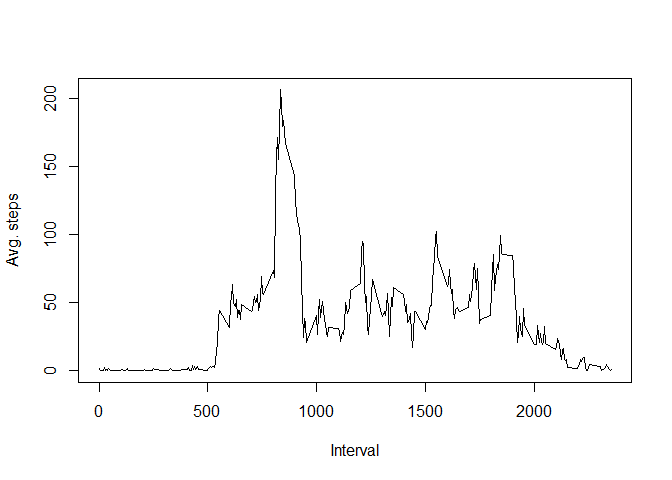
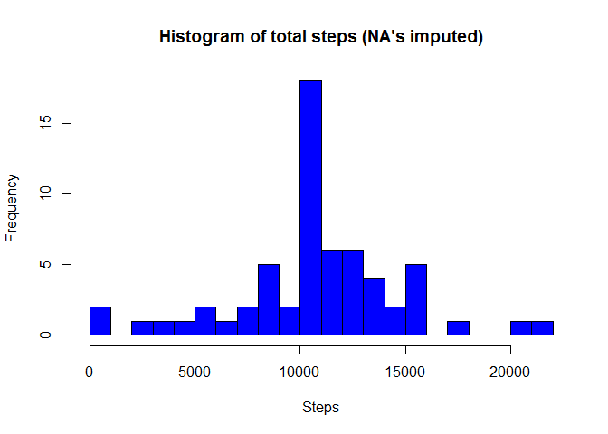

Reproducible Research: Peer Assessment 1
Loading and preprocessing the data
library(dplyr)
# set locale
Sys.setlocale("LC_TIME", "C")## [1] "C"# read data from zipfile
data <- read.csv(unz("activity.zip","activity.csv"))
# convert dates
data$date <- as.Date(data$date, format="%Y-%m-%d")
# pretty up column names
names(data) <- c("Steps","Date","Interval")
# remove NA's in steps
data_nona <- data %>% filter(!is.na(data$Steps))What is mean total number of steps taken per day?
# group by date and summarise steps
steps_total <- data_nona %>% group_by(Date) %>% summarise(Sum=sum(Steps, na.rm=TRUE))
hist(steps_total$Sum, breaks=25, col="green", main="Histogram of total steps",xlab="Steps")
mean_steps=mean(steps_total$Sum)
median_steps=median(steps_total$Sum)Mean steps a day: 10766.19
Median steps a day: 10765
What is the average daily activity pattern?
# group by interval an average steps
steps_int <- data_nona %>% group_by(Interval) %>% summarise(Avg=mean(Steps, na.rm=TRUE))
names(steps_int) <- c("Interval","Avg")
plot(steps_int, type="l", ylab="Avg. steps")
# get interval with maximal average steps
max_int <- steps_int[order(steps_int$Avg, decreasing = TRUE)[1],]Interval with the max number of steps is 835 with 206.1698 steps.
Imputing missing values
# get number of NA values in dataset
cnt_na <- count(data %>% filter(is.na(data$Steps)))Total number of rows with NA: 2304
# function for calculating average steps per interval
get_avg_steps <- function(interval){
data_int <- data %>% filter(Interval==interval)
mean(data_int$Steps,na.rm=TRUE)
}
# create new dataset with imputet NA values
data_imp <- data
for( i in 0:471)
{
imp_steps = get_avg_steps(i*5)
data_imp[data$Interval==i*5&is.na(data_imp$Steps),1] <- imp_steps
}
# group by date and summarise steps
steps_total_imp <- data_imp %>% group_by(Date) %>% summarise(Sum=sum(Steps))
hist(steps_total_imp$Sum, breaks=25, col="blue", main="Histogram of total steps (NA's imputed)", xlab="Steps")
mean_steps_imp=mean(steps_total_imp$Sum)
median_steps_imp=median(steps_total_imp$Sum)Mean steps a day: 10766.19
Median steps a day: 10766.19
The mean and median values are now equal and the peak in the histogram is more pronounced.
Are there differences in activity patterns between weekdays and weekends?
# create column with weekday
data_imp$Weekday<-weekdays(data_imp$Date)
# function for detecting weekend
is_weekend <- function( wday ){
if( wday=="Saturday" | wday=="Sunday")
{
"weekend"
}
else
{
"weekday"
}
}
# create new column indicating weekend
data_imp$Weekend <- sapply(data_imp$Weekday,is_weekend)
# group by interval an average steps
steps_int_weekend <- data_imp %>% group_by(Interval,Weekend) %>% summarise(Avg=mean(Steps))
library(lattice)
xyplot(Avg ~ Interval| Weekend, steps_int_weekend, layout=c(1,2), type="l",
ylab="Number of steps")